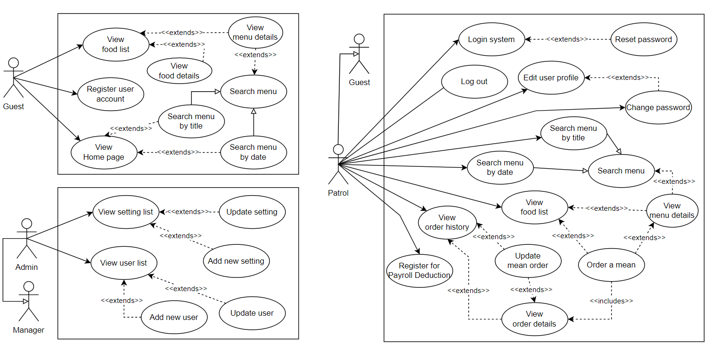
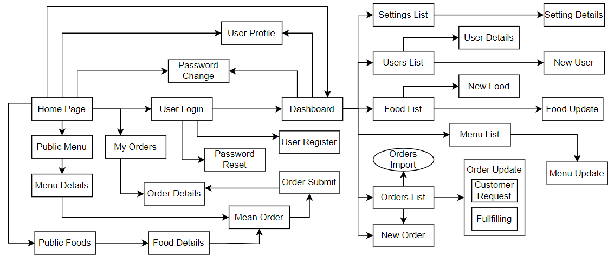
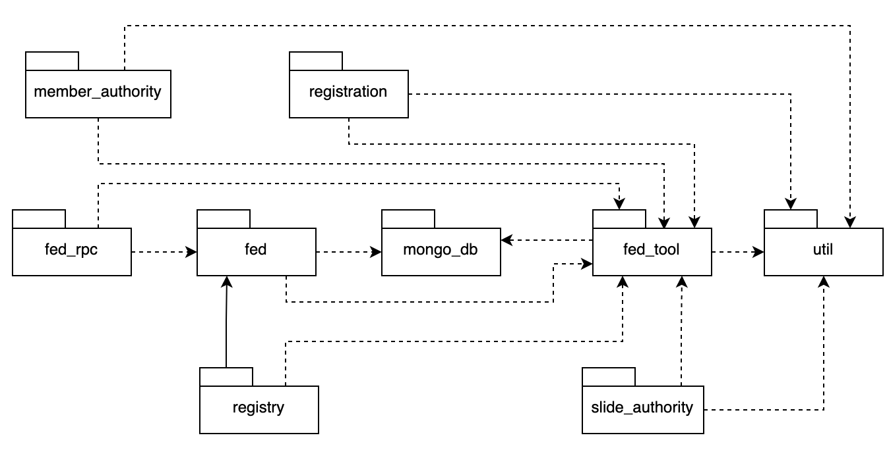
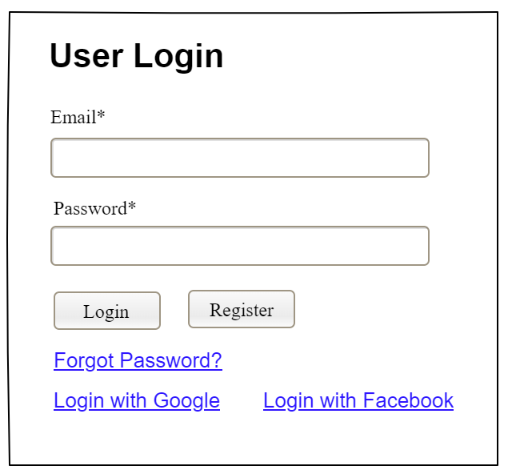
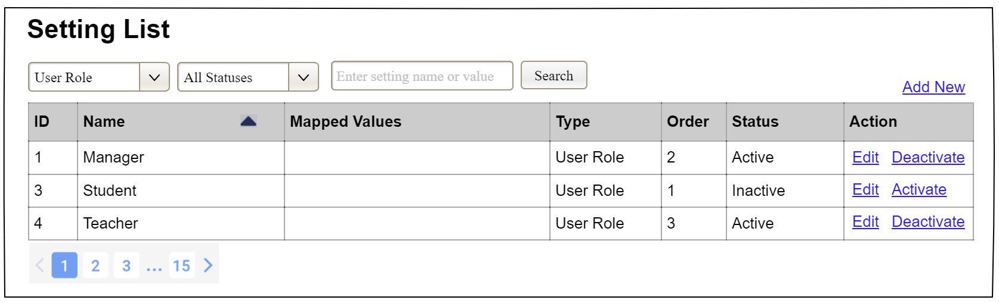
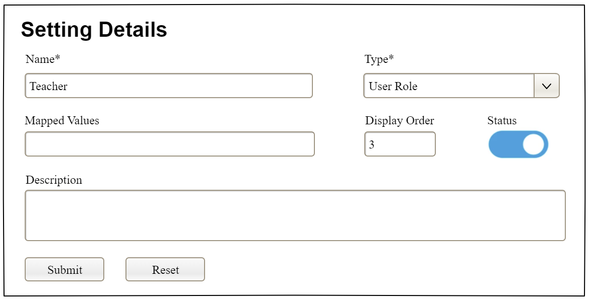

Requirement & Design Specification
Global Access Management System (GAMS)
Version: 1.0
– Hanoi, August 2022 –
Version | Date | A* | In charge | Change Description |
V1.0 | 15/2 | A | KienNTHE11 | |
*A - Added M - Modified D - Deleted
Contents
II. Requirement Specifications 8
3.2 UC-6_Register for Payroll Deduction 13
1. Assumptions & Dependencies 19
2. Limitations & Exclusions 19
[An actor is a person (or sometimes another software system or a hardware device) that interacts with the system to perform a use case. Following are some questions you might ask to help user representatives identify actors
This part gives the description of system actors, you can follow the table form as below]
# | Actor | Description |
1 | Admin | … |
2 | … | … |
[A use case (UC) describes a sequence of interactions between a system and an external actor that results in the actor being able to achieve some outcome of value. The names of use cases are always written in the form of a verb followed by an object. Select strong, descriptive names to make it evident from the name that the use case will deliver something valuable for some user]
[Provide the UC diagram(s) to show the actor-UCs and UC-UC relationships like the sample below. You can have multiple UC diagrams for the system]

This part describes the use cases, you can follow the table form as below]
ID | Feature | Use Case | Use Case Description |
01 | Menu Operations | View Menu | … |
02 | Order Meals | Order a Meal | … |
03 | … | … | … |
[This part shows the system screens and the relationship among screens. You can draw the Screens Flow for the system in the form of diagram as below. Please note that beside the normal flat screen, we might have the oval notation for pop-up screen (Import Order) or a screen with multiple information tab (Order Details), etc. You may also use text or background format for different visuality purpose]

[Provide the descriptions for the screens in the Screens Flow above]
# | Feature | Screen | Description |
1 | Order Meals | Create Order | <<Screen Brief description>> |
2 | Order Meals | Change Order |
|
3 | .. |
[Provide the system roles authorization to the system features (down to screens, and event to the screen activities if applicable) in the table form as below – replace Role1, Role2,… with your specific system user role names]
Screen | Role-Name1 | Role-Name2 | Role-Name3 | … |
<<Screen Name1>> | X | X | X | |
<<Screen Activity>> | X | X | ||
<<Screen Name2>> | X | X | ||
Query All Data | X | |||
Query Own Data | X | |||
Query Managed Data | X | |||
Add New Data | X | X | ||
Update All Data | X | |||
Update Own Data | X | |||
Update Managed Data | X | |||
Delete Data | ||||
… |
[Provide the descriptions for the functions which have no UI (or not screens), i.e batch/cron job, service, API, etc.]
# | Feature | System Function | Description |
1 | <<Feature Name>> | <<Function Name1>> | <<Function Name1 Description>> |
2 | … |
[Provide the tables relationship like example below]
No | Table | Description |
01 | <Table name> | <Description of the table> - Primary keys: <<list of primary key fields>> - Foreign keys: <<list of foreign key fields>> |
02 | <Table name2> | … |
[Provide the package diagram for each sub-system. The content of this section including the overall package diagram, the explanation, package and class naming conventions in each package. Please see the sample & description table format below]

Package descriptions
No | Package | Description |
01 | Member_authority | <Description of the package> |
02 | registration | <Description of the package> |
03 | … |
Provide the functional description for the use cases using the template/guides below
Functional Description Template
UC ID and Name: | |||
Created By: | Date Created: | ||
Primary Actor: | Secondary Actors: | ||
Trigger: | |||
Description: | |||
Preconditions: | |||
Postconditions: | |||
Normal Flow: | |||
Alternative Flows: | |||
Exceptions: | |||
Priority: | High (Medium, Low), Must Have (Should Have, Could Have),.. | ||
Frequency of Use: | |||
Business Rules: | |||
Other Information: | |||
Assumptions: | |||
Functional Description Contents
Use Case ID and Name
Give each use case a unique integer sequence number identifier. State a concise name for the use case that indicates the value the use case would provide to some user. Begin with an action verb, followed by an object.
Author and Date Created
Enter the name of the person who initially wrote this use case and the date it was written.
Primary and Secondary Actors
An actor is a person or other entity external to the software system being specified who interacts with the system and performs use cases to accomplish tasks. Different actors often correspond to different user classes, or roles, identified from the customer community that will use the product. Name the primary actor that will be initiating this use case and any other secondary actors who will participate in completing execution of the use case.
Trigger
Identify the business event, system event, or user action that initiates the use case. This trigger alerts the system that it should begin testing the preconditions for the use case so it can judge whether to proceed with execution.
Description
Provide a brief description of the reason for and outcome of this use case, or a high-level description of the sequence of actions and the outcome of executing the use case.
Preconditions
List any activities that must take place, or any conditions that must be true, before the use case can be started. The system must be able to test each precondition. Number each precondition. Example: PRE-1: User’s identity has been authenticated.
Postconditions
Describe the state of the system at the successful conclusion of the use case execution. Label each postcondition in the form POST-X, where X is a sequence number. Example: POST-1: Price of item in the database has been updated with the new value.
Normal Flow
Provide a description of the user actions and corresponding system responses that will take place during execution of the use case under normal, expected conditions. This dialog sequence will ultimately lead to accomplishing the goal stated in the use case name and description. Show a numbered list of actions performed by the actor, alternating with responses provided by the system. The normal flow is numbered “X.0”, where “X” is the Use Case ID.
Alternative Flows
Document other successful usage scenarios that can take place within this use case. State the alternative flow, and describe any differences in the sequence of steps that take place. Number each alternative flow in the form “X.Y”, where “X” is the Use Case ID and Y is a sequence number for the alternative flow. For example, “5.3” would indicate the third alternative flow for use case number 5. Indicate where each alternative flow would branch off from the normal flow, and if pertinent, where it would rejoin the normal flow.
Exceptions
Describe any anticipated error conditions that could occur during execution of the use case and how the system is to respond to those conditions. Number each alternative flow in the form “X.Y.EZ”, where “X” is the Use Case ID, Y indicates the normal (0) or alternative (>0) flow during which this exception could take place, “E” indicates an exception, and “Z” is a sequence number for the exceptions. For example “5.0.E2” would indicate the second exception for the normal flow for use case number 5. Indicate where in the normal (or an alternative) flow each exception could occur.
Priority
Indicate the relative priority of implementing the functionality required to allow this use case to be executed. Use the same priority scheme as that used for the functional requirements.
Frequency of Use
Estimate the number of times this use case will be performed per some appropriate unit of time. This gives an early indicator of throughput, concurrent usage loads, and transaction capacity.
Business Rules
List any business rules that influence this use case. Don’t include the business rule text here, just its identifier so the reader can find it in another repository when needed.
Other Information
Identify any additional requirements, such as quality attributes, for the use case that may need to be addressed during design or implementation. Also list any associated functional requirements that aren’t a direct part of the use case flows but which a developer needs to know about. Describe what should happen if the use case execution fails for some unanticipated or systemic reason (e.g., loss of network connectivity, timeout). If the use case results in a durable state change in a database or the outside world, state whether the change is rolled back, completed correctly, partially completed with a known state, or left in an undetermined state as a result of the exception.
Assumptions
List any assumptions that were made regarding this use case or how it might execute.
Provide the business rules those are applied only to the use case
ID | Business Rule | Business Rule Description |
FR1 | Password Encoding | User’s password must be encoded with MD5 hashing |
UC ID and Name: | UC-2_Login System | ||
Created By: | MinhNNT | Date Created: | 16/Jun/2023 |
Primary Actor: | Customer | Secondary Actors: | None |
Trigger: | User clicks Login button from the page header, or User accesses an authenticated feature (from a link or type the page URL directly into the address bar) | ||
Description: | As a user, I want to be able to log into the system so that I can use the system’s authenticated features and access my personalized account. | ||
Preconditions: | User account has been created & authorized | ||
Postconditions: |
| ||
Normal Flow | 2.0 Login System 1. User accesses the User Login screen 2. User types in the login details or choo other login options (see 2.1 and 2.2) 3. User clicks the Login button 4. System validates the login details (see 2.0.E1) 5. System allows user to access 6. System tracks user’s success login to the Activity Log 7. System accesses the Home Page (or the previous calling page if any) | ||
Alternative Flows: | 2.1 Google Login 1. User chooses to login system using Google account 2. System redirects the user to the Google’s Login screen 3. User types in the Google account details and chooses to login 4. Google validates user’s login information successfully and redirect him/her back to the system 5. Return to step 5 of normal flow. 2.2 Facebook Login 1. User chooses to login system using Facebook account 2. System redirects the user to the Facebook’s Login screen 3. User types in the Facebook account details and chooses to login 4. Facebook validates user’s login information successfully and redirect him/her back to the system 5. Return to step 5 of normal flow. | ||
Exceptions: | 2.0.E1 System can’t authenticate the user 1. The Error Message screen is shown to the user 2. User cancels the logging in => UC stops, change to UC-1_View Home Page 3. User clicks “Forgot Password?” link => change to UC-3_Reset Password 4. User clicks “Register” link => change to UC-4_Register User Account | ||
Priority: | Must Have | ||
Frequency of Use: | |||
Business Rules: | FR1, FR2, FR3 | ||
Other Information: | |||
Assumptions: | |||
ID | Business Rule | Business Rule Description |
FR1 | Password Encoding | User’s password must be encoded with MD5 hashing |
FR2 | Invalid Logging In | User can’t be authenticated to login the system if below cases
|
FR3 | Account Locking | If user inputs wrong logging-in details 6 times continuously, his/her account would be locked in 30 minutes |
ID and Name: | UC-5 Order a Meal | ||
Created By: | Prithvi Raj | Date Created: | 10/4/13 |
Primary Actor: | Patron | Secondary Actors: | Cafeteria Inventory System |
Description: | A Patron accesses the Cafeteria Ordering System from the corporate intranet or from home, views the menu for a specific date if desired, selects food items, and places an order for a meal to be delivered to a specified location within a specified 15-minute time window. | ||
Trigger: | A Patron indicates that he wants to order a meal | ||
Preconditions: | PRE-1. Patron is logged into COS. PRE-2. Patron is registered for meal payments by payroll deduction. | ||
Postconditions: | POST-1. Meal order is stored in COS with a status of “Accepted”. POST-2. Inventory of available food items is updated to reflect items in this order. POST-3. Remaining delivery capacity for the requested time window is updated. | ||
Normal Flow: | 5.0 Order a Single Meal
| ||
Alternative Flows: | 5.1 Order multiple identical meals
5.2 Order multiple meals
| ||
Exceptions: | 5.0.E1 Requested date is today and current time is after today’s order cutoff time 1. COS informs Patron that it’s too late to place an order for today. 2a. If Patron cancels the meal ordering process, then COS terminates use case. 2b. Else if Patron requests another date, then COS restarts use case. 5.0.E2 No delivery times left 1. COS informs Patron that no delivery times are available for the meal date. 2a. If Patron cancels the meal ordering process, then COS terminates use case. 2b. Else if Patron requests to pick the order up at the cafeteria, then continue with normal flow, but skip steps 7 and 8. 5.1.E1 Insufficient inventory to fulfill multiple meal order 1. COS informs Patron of the maximum number of identical meals he can order, based on current available inventory. 2a. If Patron modifies number of meals ordered, then Return to step 4 of normal flow. 2b. Else if Patron cancels the meal ordering process, then COS terminates use case. | ||
Priority: | High | ||
Frequency of Use: | Approximately 300 users, average of one usage per day. Peak usage load for this use case is between 9:00 A.M. and 10:00 A.M. local time. | ||
Business Rules: | BR-1, BR-2, BR-3, BR-4, BR-11, BR-12, BR-33 | ||
Other Information: |
| ||
Assumptions: | Assume that 15 percent of Patrons will order the daily special (source: previous 6 months of cafeteria data). | ||
None
ID and Name: | UC-6 Register for Payroll Deduction | ||
Created By: | Nancy Anderson | Date Created: | 9/15/13 |
Primary Actor: | Patron | Secondary Actors: | Payroll System |
Description: | Cafeteria patrons who use the COS and have meals delivered must be registered for payroll deduction. For noncash purchases made through the COS, the cafeteria will issue a payment request to the Payroll System, which will deduct the meal costs from the next scheduled employee payday direct deposit. | ||
Trigger: | Patron requests to register for payroll deduction, or Patron says yes when COS asks if he wants to register | ||
Preconditions: | PRE-1. Patron is logged into COS. | ||
Postconditions: | POST-2. Patron is registered for payroll deduction. | ||
Normal Flow: | 6.0 Register for Payroll Deduction
| ||
Alternative Flows: | None | ||
Exceptions: | 6.0.E1 Patron is not eligible for payroll deduction 6.0.E2 Patron is already enrolled for payroll deduction | ||
Priority: | High | ||
Business Rules: | BR-86 and BR-88 govern an employee’s eligibility to enroll for payroll deduction. | ||
Other Information: | Expect high frequency of executing this use case within first 2 weeks after system is released. | ||
None
[Provide brief description of the screen/function + related UC here and other details as in the sub-sections]
[This is to describe the UI layout (Mockup prototype) & descriptions for screen fields/components]
<<Mockup prototype>>
Field Name | Field Type | Description |
Field Group Name | ||
<<Field-Name>> | <<Field type>> | <<Field description & data initializing design>> |
[Provide the design description for the screen/function to access the database here: what table the screen/function would access, which transactions does it make (C-Create, R-Read, U-Update, or D-Delete), and how/purpose of the access (by providing Description and SQL commands)]
Table | CRUD | Description |
<<Table Name>> | <<transaction(s)>> | <<Table access description: purpose, how,…>> |
.. |
SQL Commands
[Provide the detailed SQL (select, insert, update...) which are used in implementing the screen/function]
This screen allows user to be authenticated to the system screens/functionalities.
Related use cases:

Field Name | Field Type | Description |
Email* | Text Box | This is for user to input valid email address for logging in |
Password* | Password Box | This is for user to input password for logging in |
Login | Button | User clicks to authenticate him/herself into the system with provided email & password |
Register | Button | User clicks to redirect to the User Register page for registering new user account to access the system |
Forgot Password? | Hyperlink | User clicks to redirect to the Password Reset page for resetting his/her forgot password |
Login with Google | Hyperlink | Allow user to login with his/her Google account |
Login with Facebook | Hyperlink | Allow user to login with his/her Facebook account |
Table | CRUD | Description |
User | R | Verify UserName & Password information |
Setting, User | R | Specify the authorizations of the logged-in user |
SQL Commands:
1/ Verify UserName & Password information
SELECT user_id, full_name, email, image_url, status
FROM user WHERE user_name = ? AND password = ?
2/ Specify the authorizations of the logged-in user
SELECT mapped_values FROM setting WHERE setting_id = ?
SELECT setting_name, mapped_values FROM setting WHERE setting_id IN (?)

Field Name | Field Type | Description |
Search Fields | ||
Setting Type | Combo Box Single-Choice | Filled with the list of current active setting types Allow to filter the list by setting type; Default value is “All Types” |
Setting Status | Combo Box Single-Choice | Values: All Statuses (default), Active, and Inactive Allow to filter the list by status Default value: “All Statuses” |
Search Phase | Text Box String (30) | Allow to search using the name or map values Default value: blank |
Search | Button | Click to refresh the list with the defined filter(s) and search phrase. |
Add New | Hyperlink | Click to open the Setting Details page for adding new setting (master data) |
Data Table | ||
ID | Integer | Auto-increased identifier of the setting |
Name | Text | Name of the setting |
Mapped Values | Text | Supplementary information for the setting |
Type | Text | Type of the setting |
Order | Integer | Display order of the setting: the order of the setting type, displayed among the list of settings with the same type |
Data Actions | ||
Edit | icon | Click to open the Setting Details page for updating the relevant setting (master data) |
Activate | icon | Shown when the data status is inactive. This is to activate the relevant setting (master data) |
Deactivate | Ion | Shown when the data status is active. This is to deactivate the relevant setting (master data) |
Table | CRUD | Description |
Setting | RU | Query the list of current settings from the database Update status of a specific setting |
SQL Commands:
1/ Query the list of current settings from the database
SELECT setting_id, setting_name, mapped_values, type_id, display_order, status
FROM setting WHERE (setting_type = ?) AND (status = ?) AND (setting_name LIKE ?)
2/ Update status of a specific setting
UPDATE setting SET status = ? WHERE setting_id = ?

Field Name | Field Type | Description |
Name* | Text Box String (20) | Name of the setting |
Type* | Combo Box (Single Choice) | Type of the setting, filled with the list of setting types Default value: the first type in the list |
Mapped Values | Text Box String (50) | Supplementary information for the setting (if any) |
Order | Text Box Integer (>=0) | Display order of the setting: the order of the setting type, displayed among the list of settings with the same type |
Status | On/Off button | Status of the setting: Active or Inactive Default value: Active |
Description | Text Area String (200) | Description of the setting |
Submit | Button | Click to store new or updated setting details |
Reset | Button | Click to reset the changes use has made on the screen fields back to the initial values when the screen is loaded |
…
[Record any assumptions that were made when conceiving the project and writing this vision and scope document. Note any major dependencies the project must rely upon for success, such as specific technologies, third-party vendors, development partners, or other business relationships.]
<<Sample:
AS-1: Systems with appropriate user interfaces will be available for cafeteria employees to process the expected volume of meals ordered.
AS-2: Cafeteria staff and vehicles will be available to deliver all meals for specified delivery time slots within 15 minutes of the requested delivery time.
DE-1: If a restaurant has its own on-line ordering system, the Cafeteria Ordering System must be able to communicate with it bi-directionally.
>>
[Identify any product features or characteristics that a stakeholder might anticipate, but which are not planned to be included in the new product]
[Provide common business rules that you must follow. The information can be provided in the table format as the sample below]
<<Sample
ID | Category | Rule Definition |
BR-01 | Constraints | Delivery time windows are 15 minutes, beginning on each quarter hour. |
BR-02 | Constraints | Deliveries must be completed between 10:00 A.M. and 2:00 P.M. local time, inclusive. |
BR-03 | Facts | All meals in a single order must be delivered to the same location. |
BR-04 | Facts | All meals in a single order must be paid for by using the same payment method. |
BR-11 | Constraints | If an order is to be delivered, the patron must pay by payroll deduction. |
BR-12 | Computations | Order price is calculated as the sum of each food item price times the quantity of that food item ordered, plus applicable sales tax, plus a delivery charge if a meal is delivered outside the free delivery zone. |
>>